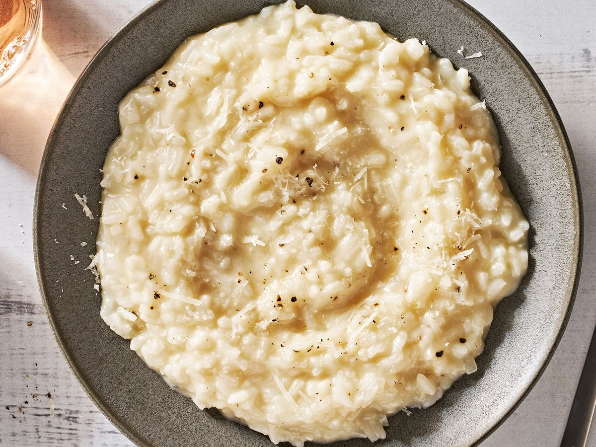

Risotto

A bowl of risotto.
Risotto is an Italian rice dish cooked with broth until it reaches a creamy consistency.
The broth can be derived from meat, fish, or vegetables.
Many types of risotto contain butter, onion, white wine, and Parmesan cheese.
It is one of the most common ways of cooking rice in Italy.
Ingredients
- Arborio Rice
- Chicken Broth
- Shallots
- Garlic
- White Wine
- Butter
- Parmesan
Steps
- In a wide pot saute shallots and garlic.
- Add rice to same pot and toast until warm and add wine to reduce.
- Add broth to rice, stirring as you go. Continue adding broth as the rice absorbs it.
- Taste the rice as you go. The right consistency should be soft but not mushy.
- Stir in as much parmesan as you'd like and serve immediately.